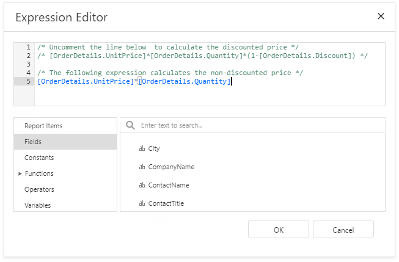
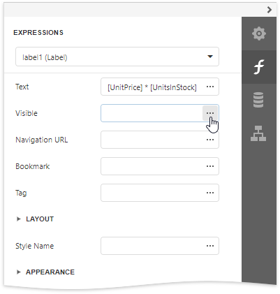
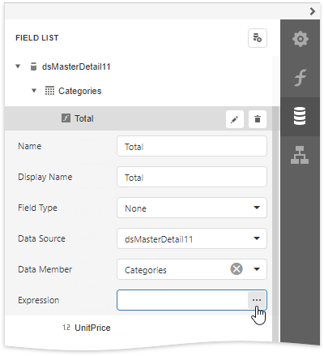

Expression Editor
This document describes how to use the Expression Editor to specify expressions in the Report Designer.
Invoke the Expression Editor from a property's popup menu in the Properties Panel. Click the property's marker and select the PropertyName Expression.
If a property's editor displays an ellipsis button, you can click this button to invoke the Expression Editor and specify an expression that evaluates to the property's value.
The Expression Editor offers a choice of functions, operators, data source fields, report elements, constants, and variables to create an expression.

An expression can span multiple lines.

You can add single-line or multi-line comments in the following format: /* comment text */.

The Expression Editor highlights an expression's syntax and supports intelligent code completion (it suggests functions and available data elements as you type).

An error icon appears if an expression contains errors. Hover the mouse pointer over this icon to invoke a pop-up notification that shows the location of the error.

See the Expression Language topic for the expression syntax description.
Expression Syntax
Take into account the following syntax conventions when using the Expression Editor:
Reference a data field in the expression by enclosing its name in the square brackets (for example, [ProductName]).
Insert report parameters and query parameters by typing a question mark before their names (for instance, ?parameter1).
Denote string values with apostrophes. Type a double apostrophe to embed an apostrophe into an expression's text (for example, 'It''s sample text').
Enclose date-time constants with hashtags ([OrderDate] >= #1/1/2016#).
Use a question mark to specify a null reference (one that does not refer to any object) ([Region] != ?).
If an expression involves the use of different types, you can convert them to the same type using dedicated functions (for instance, Max(ToDecimal([Quantity]),[UnitPrice])).
Using the Expression Editor
When expression bindings are enabled in your reports, the Report Designer contains the Expressions tab allowing you to assign values to various element properties. Clicking any property's ellipsis button invokes the Expression Editor, in which you can specify custom expressions with the available data fields.

In the data binding mode, you can use the Expression Editor in the following cases:
Edit a Calculated Field's Expression
Access a calculated field's settings in the Field List and click Expression property's ellipsis button.

Specify a Query Parameter's Value
In the Configure Query Parameters wizard page, set the parameter type to Expression and click the Value property's the ellipsis button.

Construct a Formatting Rule's Condition
Access the formatting rule's settings in the Properties panel and click the Condition property's ellipsis button.